Установка корневых сертификатов
Скачайте три действующих корневых сертификата:
Следующие действия нужно выполнить по очереди с каждым из скачанных сертификатов.
Откройте файл двойным кликом мыши и нажмите кнопку Установить сертификат
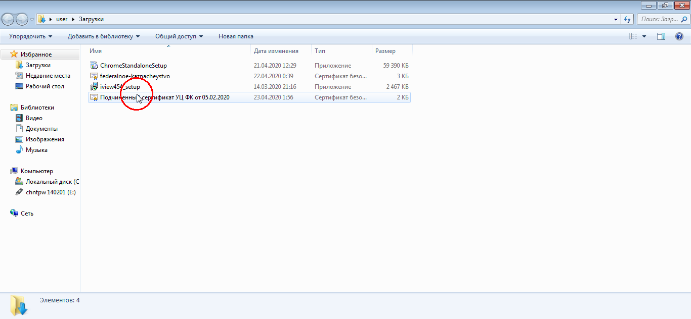
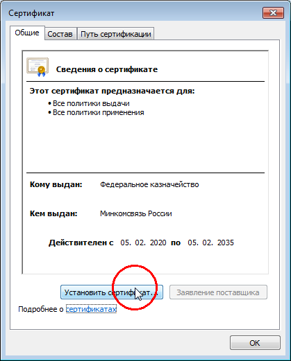
Откроется мастер импорта сертификатов. Нажмите кнопку Далее 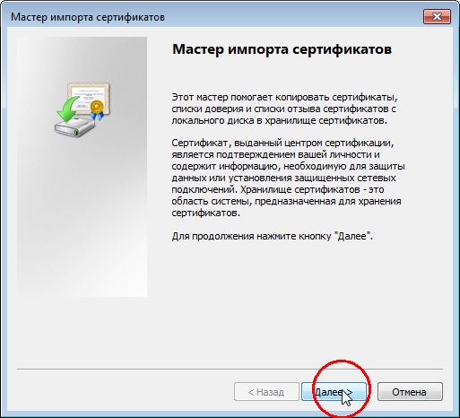
Выберите пункт Поместить все сертификаты в следующее хранилище и нажмите кнопку Обзор
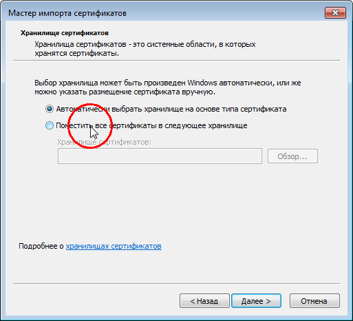
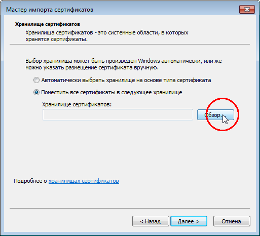
В открывшемся окне выберите хранилище Доверенные корневые центры сертификации и нажмите кнопку Ок
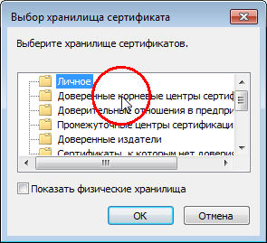
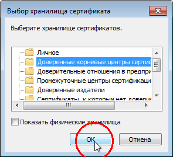
Нажмите кнопку Далее, затем - Готово
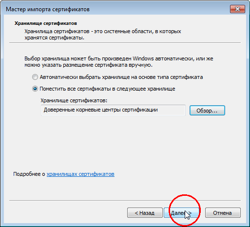
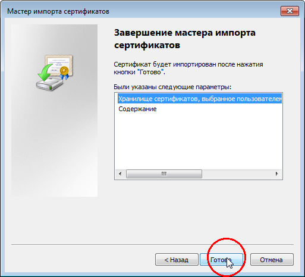
Появится предупреждение о безопасности, согласитесь с ним, нажав кнопку Да 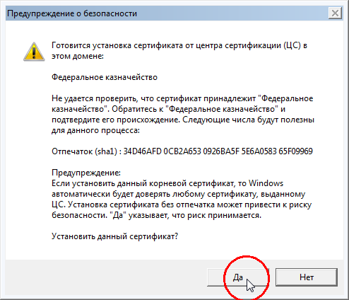
Импорт сертификата завершен. Повторите эту процедуру для всех корневых сертификатов. 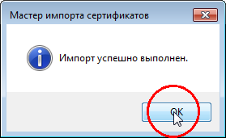